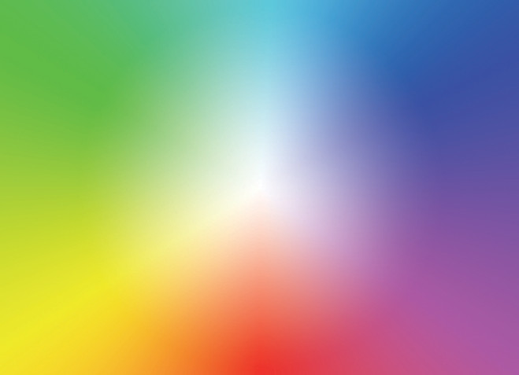

Documentation
You can customize this text by params description in your config.toml
Alternatively, for H1 and H2, an underline-ish style:
Combined emphasis with asterisks and underscores.
- First ordered list item
- Another item
- Unordered sub-item1.
- Unordered sub-item2.
- Actual numbers don’t matter, just that it’s a number
- Ordered sub-item1
- Ordered sub-item2
- And another item.
I’m an inline-style link with title
Inline-style:

Main Page Img:
